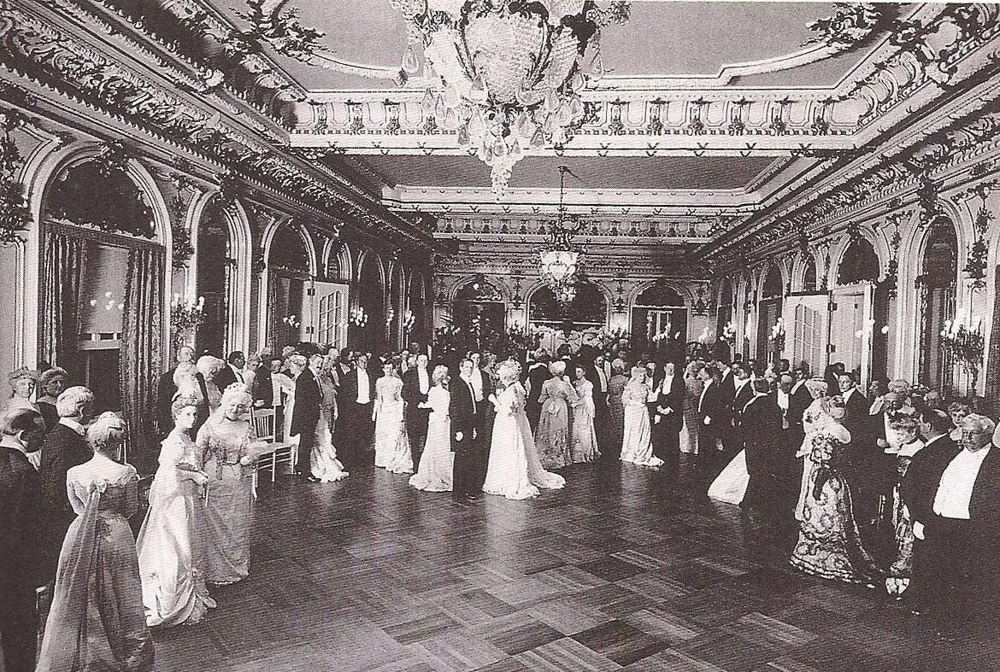

THE GOLDEN GLIMPSE
Being Rich is Good. Being Poor is a Choice.
Millionaire for a Day
Hard work pays off! As Carnegie (1889) said, "The Gospel of Wealth" proves that the best people rise to the top. If you are still poor, you just aren't trying hard enough!
Gold Spoons Save the Economy!
Rich people spending money creates jobs! When the rich have a big feast, it helps the poor workers who serve them.

The Lazy Worker?
Some people choose a "simple life" in the slums because they don't want the stress of being successful.